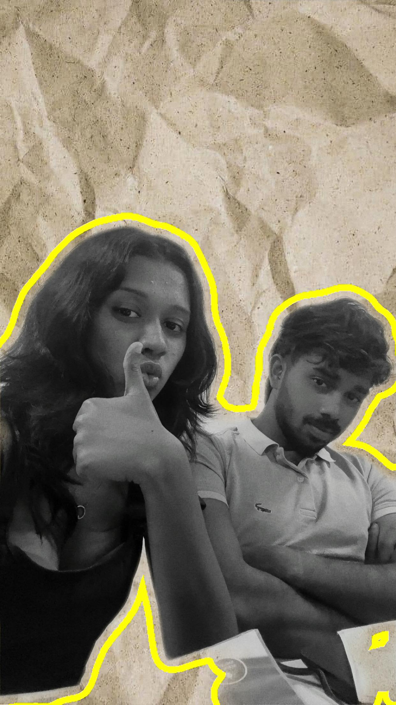
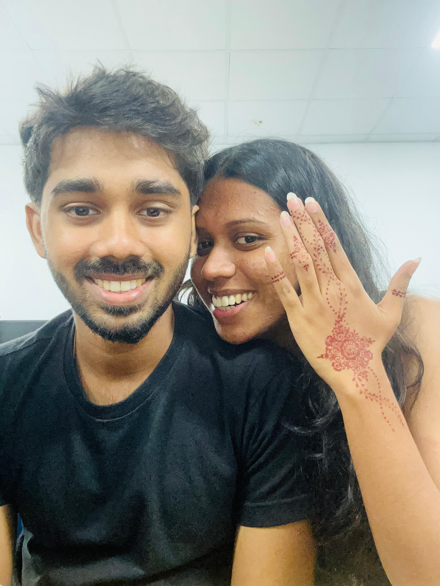
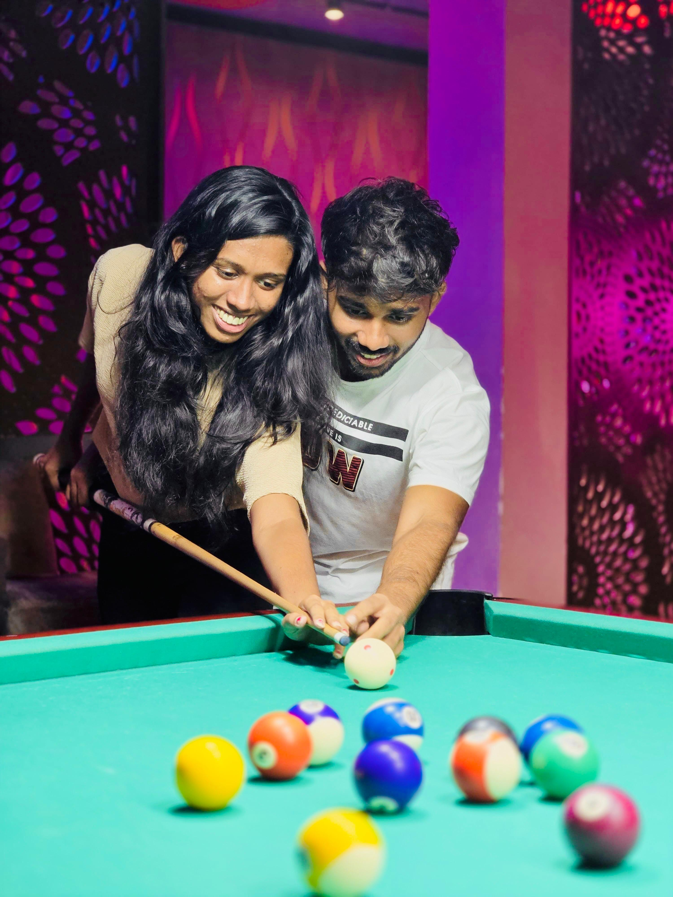
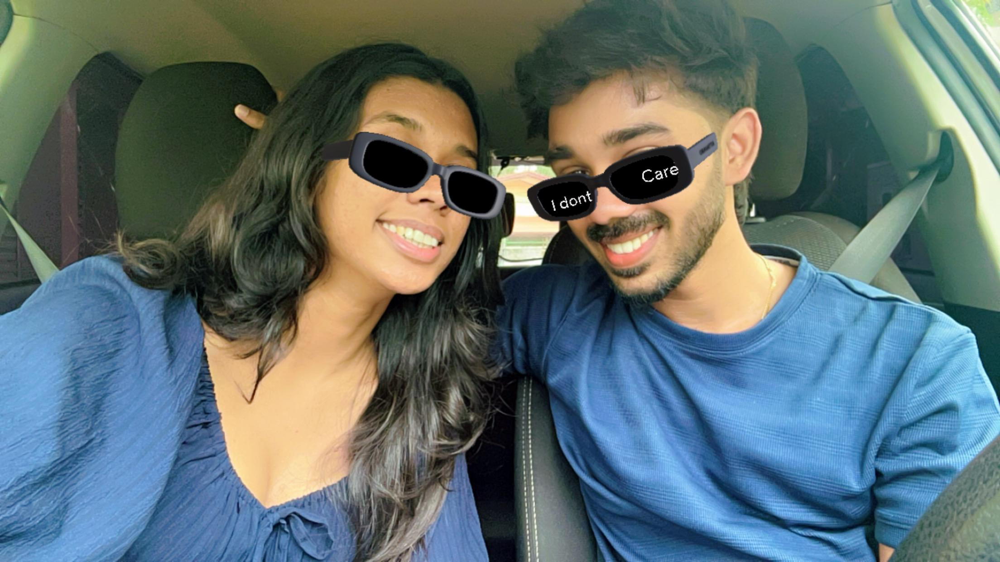
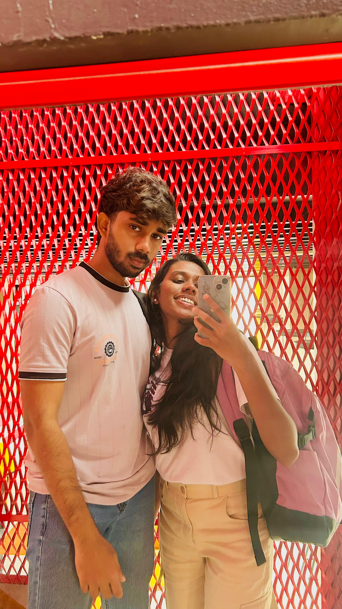

23 Years of You
Happy 23rd Birthday
To the person
who made my ordinary days magical...
Captured Moments
Our Beautiful Memories
Battle Scar 🤕
Together Always 💕

Goofballs 😂
Attack Mode ⚡
Beach Bliss 🌊

Cherished 💙
Pose Master 😎

Perfect Shot 🎯
Forever Walks 👣

Cool Together 😎

Side by Side 🤍
Holding On 🤝
In No Particular Order
20 Reasons Why I Love You
Scientifically Proven
Love Meter
Scanning...
0%
ERROR
Maximum Capacity Reached
Relationship Trivia
How Well Do You Know Us?
Est. Day One
Our Love Scorecard
One More Thing
Your Surprise Gift
Tap the gift to open it
Virtual Hugs
Warning: Terrible Kisses Incoming
Your Real Gift Is Waiting...
The Final Chapter
Happy 23rd Birthday My Favorite Human
Hey love...
If you're crying right now...
Please don't.
I don't like seeing tears because of me.
Here...
Use this tissue. 🤍
With all my love,
your most favorite person. 💙